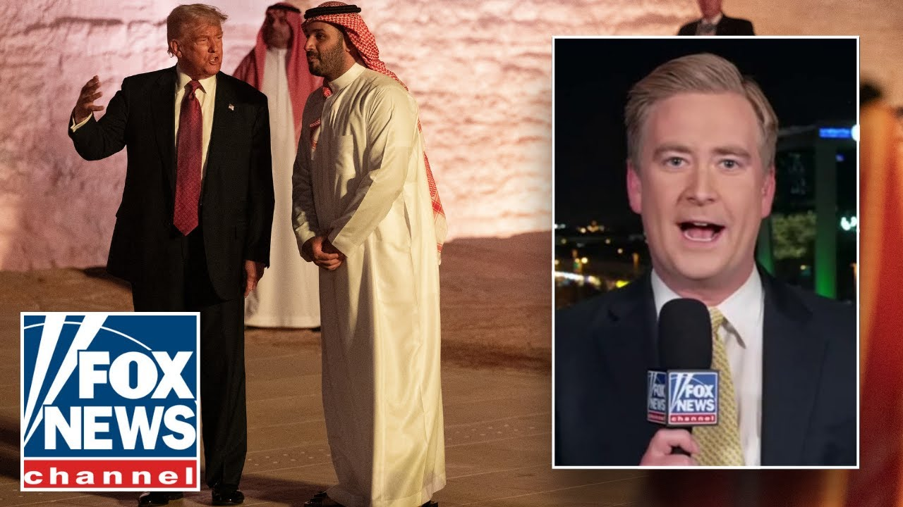

【彼得·杜西解析特朗普从沙特阿拉伯获得的1万亿美元投资承诺】
Summary: President Trump secures major investment commitments during his Middle East trip, with Saudi Arabia pledging up to $1 trillion for US projects, while emphasizing peace and commerce in the region.
摘要： 特朗普总统在中东之行中获得了重大投资承诺，沙特阿拉伯承诺为美国项目提供高达1万亿美元的资金，同时强调该地区的和平与商业。

⏱️ Estimated Reading Time: 6 min
All right, thank you very much you guys.
好的，非常感谢大家。
Good afternoon.
下午好。
I'm Martha McCllum and this is the story breaking right now.
我是玛莎·麦克卡勒姆，这是正在发生的突发新闻。
President Trump's extraordinary trip to Saudi Arabia.
特朗普总统对沙特阿拉伯的非凡访问。
He is at a state dinner right now.
他现在正在参加国宴。
You can bet that it is very elaborate based on what we saw in terms of his welcome as he begins his 4-day swing through the Middle East.
从他开始为期四天的中东之行时所受到的欢迎来看，你可以想象这次国宴非常隆重。
The goal on this stop, a trillion dollar of investment in the US by the Saudis.
此行的目标是让沙特向美国投资一万亿美元。
So far, they have locked in $600 billion in terms of the commitment from Saudi Crown Prince Muhammad bin Salman to invest in everything from defense to infrastructure for AI, a really big part of this trip.
到目前为止，他们已经锁定了沙特王储穆罕默德·本·萨勒曼的6000亿美元投资承诺，涵盖从国防到人工智能基础设施等各个方面，这是此行的重要组成部分。
NBS has suggested that they will get to that trillion dollar mark in investment in time.
NBS表示，他们将及时达到一万亿美元的投资目标。
President Trump given a royal welcome.
特朗普总统受到了王室般的欢迎。
Arabian stallions escorted the president's vehicle.
阿拉伯骏马护送总统的车辆。
And how about this?
还有这个呢？
A custom-built mobile McDonald's truck was rolled out for the president's time in Saudi Arabia as well.
一辆定制的移动麦当劳卡车也为总统在沙特阿拉伯的停留而推出。
You can bet he was looking forward to taking part in that.
你可以打赌他很期待参与其中。
And you can hear a rendition of God Bless the USA as the president took the stage for these remarks as he heralded the growing strength of the new Middle East.
当总统上台发表这些讲话时，你可以听到《上帝保佑美国》的演奏，他预示了新中东日益增长的力量。
The new generation of leaders is transcending the ancient conflicts of tired divisions of the past and forging a future where the Middle East is defined by commerce, not chaos, where it exports technology, not terrorism, and where people of different nations, religions, and creeds are building cities together, not bombing each other out of existence.
新一代领导人正在超越过去疲惫分歧的古老冲突，打造一个中东由商业而非混乱定义的未来，出口技术而非恐怖主义，不同国家、宗教和信仰的人们共同建设城市，而不是互相轰炸至毁灭。
Big message there in that soundbite that you just heard.
你刚才听到的那段话中有重要信息。
Senior White House correspondent Peter Ducey following it all live from Riad.
白宫高级记者彼得·杜西从利雅得现场报道这一切。
Hi Peter.
你好，彼得。
And Martha.
还有玛莎。
As far as Trump deals have gone uh since he got back to office in January, today's actually seemed like it was pretty easy.
就特朗普自一月份重返办公室以来的交易而言，今天的交易实际上看起来相当容易。
He came in on Air Force One.
他乘坐空军一号抵达。
He talked about how he thought that 600 billion was pretty good, but that he wanted a trillion.
他谈到了他认为6000亿美元相当不错，但他想要一万亿美元。
And then about four hours later, that is exactly what the crown prince pledged.
大约四个小时后，王储承诺的正是这个数字。
In the coming months, we will work on second phase to finalize the remaining agreement to raise them to $1 trillion.
在未来几个月，我们将致力于第二阶段，以最终达成剩余协议，将其提高到1万亿美元。
That was easy.
这很容易。
And it wasn't just about business deals.
而且不仅仅是商业交易。
At this business forum.
在这次商业论坛上。
President Trump talked about how he will soon drop sanctions on Syria on the sidelines of a meeting with Syria's interim president tomorrow to give that country a chance to thrive.
特朗普总统谈到，他明天将在与叙利亚临时总统会晤的间隙，很快解除对叙利亚的制裁，给该国一个繁荣的机会。
He also said that he's going to help Saudi Arabia defend itself from Iran and its proxies and that he is going to do his very best to make a deal with Thrron to prevent them from ever getting a nuclear weapon.
他还表示，他将帮助沙特阿拉伯抵御伊朗及其代理人的攻击，并将尽最大努力与Thrron达成协议，防止他们获得核武器。
As I've shown repeatedly, I am willing to end past conflicts and forge new partnerships for a better and more stable world, even if our differences may be very profound, which obviously they are.
正如我一再表明的那样，我愿意结束过去的冲突，并为更美好、更稳定的世界建立新的伙伴关系，即使我们的分歧可能非常深刻，显然它们确实如此。
In the case of Iran, I have never believed in having permanent enemies.
就伊朗而言，我从不相信有永久的敌人。
I am different than a lot of people think.
我与很多人想的不同。
I don't like permanent enemies, but sometimes you need enemies to do the job, and you have to do it right.
我不喜欢永久的敌人，但有时你需要敌人来完成工作，而且你必须做对。
And at some point between Lee Greenwood as the opening song and the Village People as the closing song, President Trump stressed to this crowd that was a mix of half Americans and half Saudi business people that he wants to be known.
在李·格林伍德的开场曲和村民乐队的结束曲之间的某个时刻，特朗普总统向这群由一半美国人和一半沙特商人组成的观众强调，他希望被人们记住。
He wants his legacy to be as a peacemaker in the Middle East.
他希望自己的遗产是作为中东的和平缔造者。
Martha, thank you very much, Peter.
玛莎，非常感谢，彼得。
Hey, Sean Hannity here.
嘿，我是肖恩·汉尼提。
Hey, click here to subscribe to Fox News YouTube page and catch our hottest interviews and most compelling analysis.
嘿，点击这里订阅福克斯新闻的YouTube页面，获取我们最热门的采访和最引人注目的分析。
You will not get it anywhere else.
你在其他地方是得不到的。